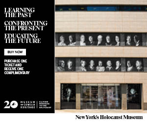

MUST-SEE NYC
A trip to New York City is the experience of a lifetime. With famous attractions like Times Square, Central Park, the Empire State Building and Yankee Stadium—to name just a few—NYC packs more to see and do into one compact area than any other place on earth. Each of the City’s five boroughs contains its own roster of must-see destinations, great restaurants, cultural hot spots and unforgettable activities. Start planning your trip with the guides on this page
